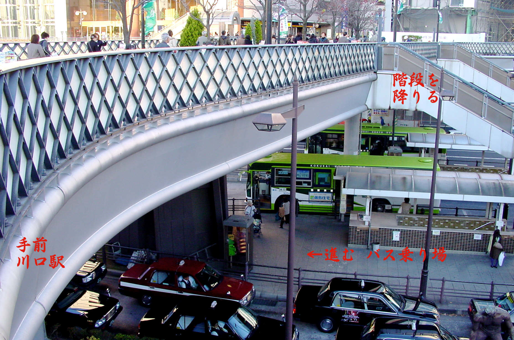
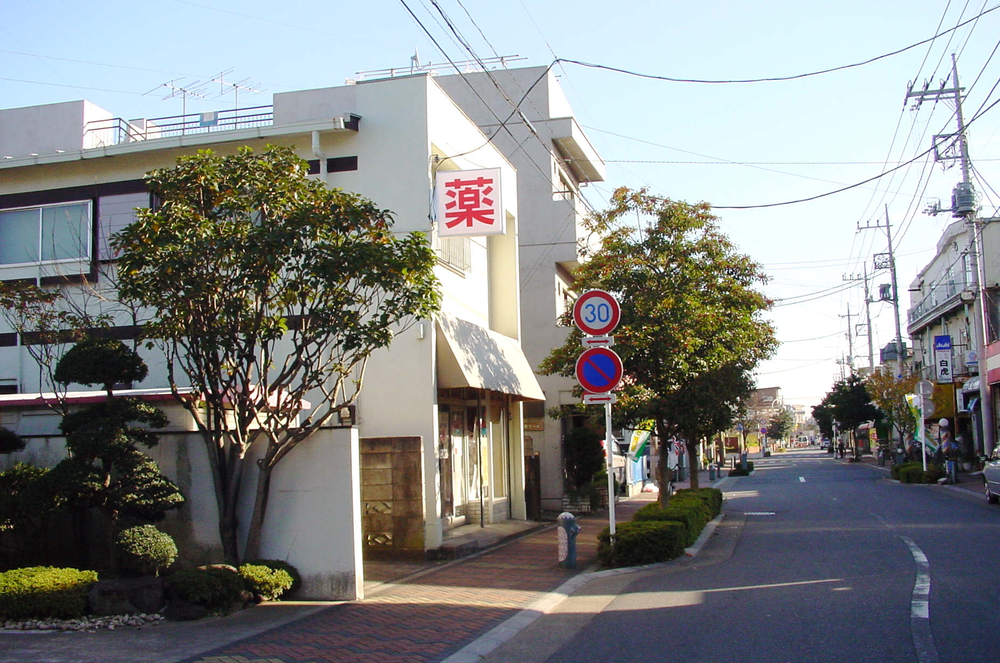
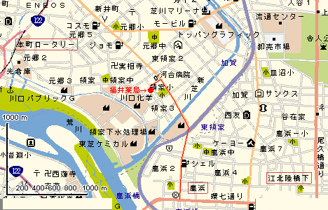

川口市領家３−１２−２２
電話０４８−２２３−１６６１
○ＪＲ京浜東北線−川口駅下車(東京駅から２５分)
改札口を出て右へ−陸橋へ（正面にそごうデパートが見えます）
○タクシーの場合（１０分、１３００円程度）−右の下りエスカレーターを降りて
左にタクシーの列が並んでいます−乗り場はずっと先です
タクシーの運転手は「領家３丁目商店街、福井薬局」でわかると思います
○バスの場合（２０分、１９０円）陸橋の右側に−バス乗り場の表示があります
「川０１東領家循環」の掲示板のある階段を下ります
乗り場は先の方です−車両の表示は「川０１番−東領家循環」


ここの停留所名は 川口駅東口(かわぐちえきひがしぐち) 乗車表示の
「系統 川０２ 行き先 東領家循環」にお乗りいただいて−下車は「領家小学校裏」です
このバスの発車時間表は(１６年９月１日改定)
平日 土曜日・日曜祭日
時 分 時 分
10 05 35 ｜ 10 00 25 50
11 05 35 ｜ 11 20 50
12 05 35 ｜ 12 20 50
13 05 35 ｜ 13 15 40
14 05 35 ｜ 14 05 30
15 00 30 ｜ 15 00 20 45
16 00 30 ｜ 16 10 35
17 00 25 45 ｜ 17 00 25 50
お問合せ：川口営業所 TEL048-252-5660
「領家小学校裏」で降ります、信号の有る十字路（河合病院手前）を左折−
２本目の十字路を左へ、くすりの看板がでています、徒歩５分ほどです

領家３丁目の商店街です

福井薬局外観

●車でご来店の場合は

東京方面からは、環状七号線の鹿浜交差点を川口方面に曲がって、直進約数分ほどで
左側に河合病院があります、信号のある交差点を左折、２本目の十字路を左に曲がりすぐです
ホームページへ